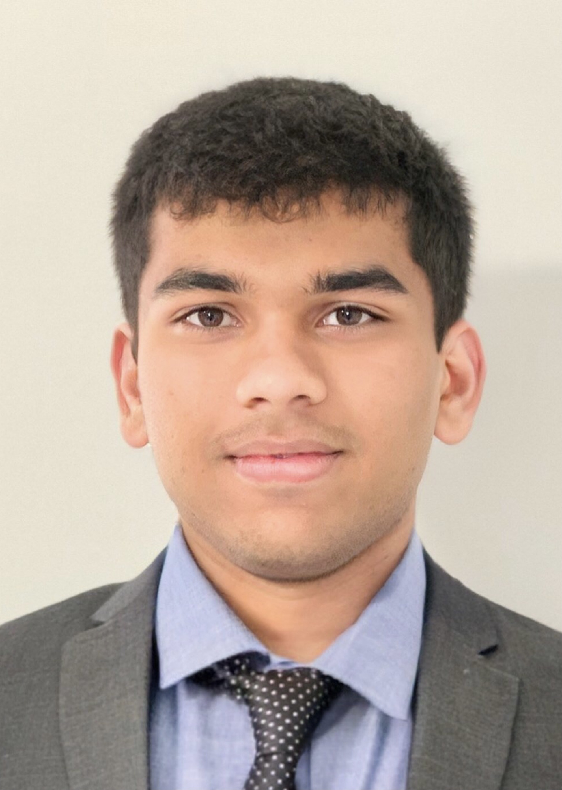

I am a PhD candidate in Dr. Christian Reichardt's Observational Cosmology group at the University of Melbourne. I am working with the South Pole Telescope (SPT) Collaboration on the Cosmic Microwave Background and related topics.
Prior to joining this group, I was at the Physical Research Laboratory, Ahmedabad, where I worked with Prof. Subendra Mohanty on cosmological models of self-interacting dark matter.
Besides Physics, which is my ultimate obsession, I like to dabble with computer science, data, and related things. I occasionally write on these topics. Please have a look below.